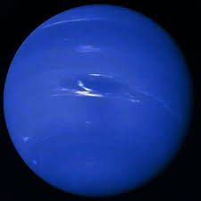

Urano

Urano es el séptimo planeta del sistema solar, el tercero de mayor tamaño, y el cuarto más masivo.Aunque es detectable a simple vista en el cielo nocturno, no fue catalogado como planeta por los astrónomos de la antigüedad debido a su escasa luminosidad y a la lentitud de su órbita Sir William Herschel anunció su descubrimiento el 13 de marzo de 1781, ampliando las fronteras entonces conocidas del sistema solar, por primera vez en la historia moderna. Urano es también el primer planeta descubierto por medio de un telescopio.